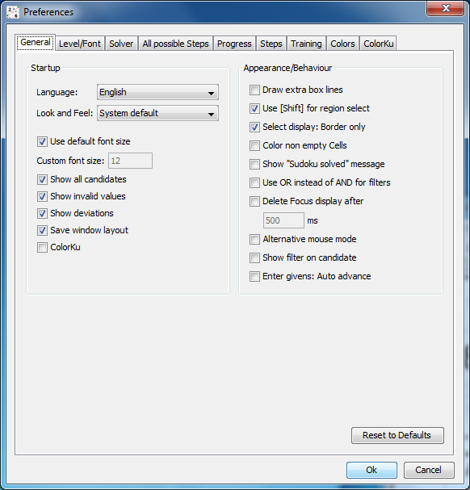
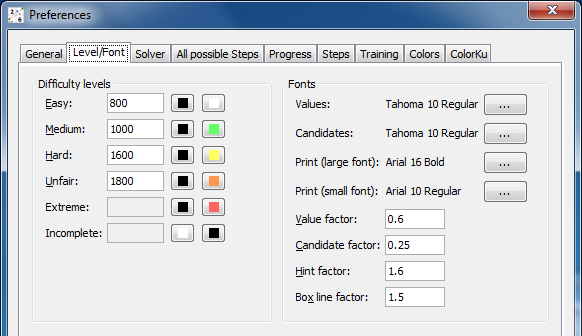
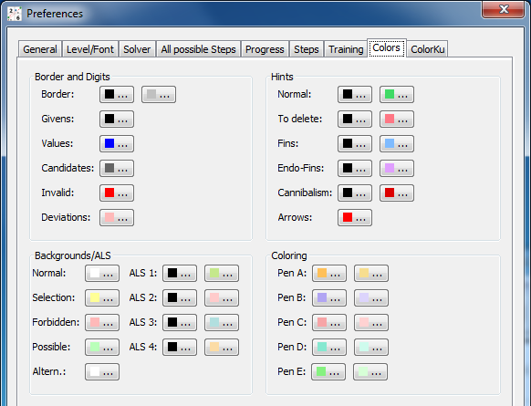
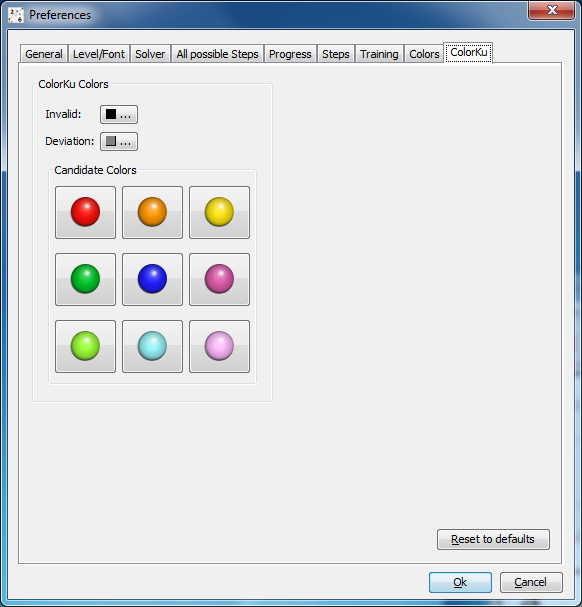

Chapter 7: Reference
Table of Contents
Options
All options are accessible via the Edit|Preferences dialog. Every panel has a "Reset to defaults" button that resets all options visible on that panel. HoDoKu stores all options at shutdown (see Files used by HoDoKu) and loads them again at the next run. In addition to that standard behaviour options can be written to a file (see Saving/Loading configurations and sudokus). These configuration files can also be used with the /c option in batch runs.
Although HoDoKu's configuration files are standard XML files and can be edited using any text editor program this is generally not recommended.
General options
Startup panel:
The startup panel is used to set options, that are only used at program start (an exception is the "Look and Feel" option, which has an immediate effect; a program restart after changing it is however recommended). Some of the options reflect the initial values of the items in the "Options" menu. If one of these items is changed during a game, that change is not written to disk. Every checkbox corresponds to the item with the same name.
- Language: The language of the GUI.
- Look and Feel: Java programs can change their appearance. HoDoKu normally uses the standard Look and feel of the operating system ("System default"), but another Look and Feel can be chosen here
- Use default font size: Menus and dialogs use the operating systems default settings for fonts and font size.
- Custom font size: If "Use default font size" is not selected, a custom font size can be chosen here (please note, that this feature doesn't work under GTK Look and Feel). This feature is especially useful for visually challenged users
- Show all candidates: State of "Options|Show all candidates" at program start
- Show invalid cells: State of "Options|Show invalid cells" at program start
- Show deviations: State of "Options|Show deviations" at program start
- Save window layout: Saves the current window layout when the program is closed and restores it at the next start
- ColorKu: State of "Options|ColorKu" at program start
Appearance/Behaviour panel:
Various options that control, how HoDoKu looks like and reacts to user input:
- Draw extra box lines: If set, all boxes are drawn with their own border and some empty space between them
- Use [Shift] for region select: Influences the behaviour of the mouse: If checked [Shift][Left Mouse Button] is used to select a rectangular region of cells. If not checked, [Shift][Left Mouse Button] can be used to toggle candidates
- Select display: Border only: When set, selected cells are drawn with a light yellow border; if not set, selected cells are drawn solid yellow
- Color non empty cells: Specifies, if cells, that have a value set, are colored or not
- Show "Sudoku solved" message: When set, a message box is displayed, when a sudoku has been completely solved
- Use OR instead of AND for filters: Influences filter behaviour (see Using filters for an explanation)
- Delete Focus display after xx ms: If set, the focus (yellow background/border) is removed after the specified time period; please note, that this option is not used, when more than one cell is selected
- Alternative mouse mode: When set, alternative mouse mode is used
- Show filter on candidate: If set, filter backgrounds are only drawn around candidates, not around the entire cells
- Enter givens: Auto advance: If set, the cursor automatically moves to the next cell, when a digit is entered (only affects Enter givens mode)
Level/Font options
The options for difficulty levels are described in detail in Rating and difficulty levels.
Fonts panel:
- "Values" and "candidates" are the fonts used in the sudoku area. The size of the fonts is ignored.
- "Print (large font)" is used for captions when printing sudokus.
- "Print (small font)" is used for ratings when printing..
- "Value factor" sets the size of the values relative to the current size of the cell.
- "Candidate factor" sets the size of the candidates relative to the current size of the cell.
- "Hint factor" sets the size of the hint backgrounds (filled circles) relative to the current size of the cell.
- "Box line factor" sets the size of the lines around boxes relative to the size of the lines around cells.
Solver options
The solver options are discussed in Configuring the solver.
All possible steps options
The all possible steps options are discussed in Finding all possible steps.
Progress options
The all progress options are discussed in Progress measurement.
Step options
The step options are discussed in Options for solver steps.
Training options
The training options are discussed in Game modes.
Color options
All colors used by HoDoKu can be changed arbitrarily. Colors for difficulty levels can be changed in the Level/Font options panel.
ColorKu options
All colors used by HoDoKu in ColorKu mode can be changed arbitrarily as well.
Command line options
HoDoKu can be used as command line utility. It can solve single sudokus, can batch solve sudokus read from a file and it can generate sudokus containing specific steps. Since the exe version of HoDoKu under Windows does not have a console window, a custom console window opens when run in batch mode. To quit HoDoKu simply press "Quit".
Please note that piping (I/O chaining) does not work with the exe version. Use the jar version instead.
General options
- /h, /?
- Prints a help screen.
- /f <file>
- Read options from file <file>. Can be combined with any number of options at the command line or from stdin
- /c <hcfg file>
- Use configuration file <hcfg file> for this run. The configuration file should be created with the GUI version of HoDoKu. Using /c does not affect the configuration of the GUI version.
- /lt
- List symbolic names for the various solution techniques supported by HoDoKu. The symbolic names can be used with options like /sc or /vg (see below).
Solve single sudokus
The sudoku has to be given as character string in any format HoDoKu understands. '.' or '0' can be used for cells that are not givens. Pencilmark Grids are supported but if the input string contains blanks it has to be enclosed in " or '. HoDoKu solves the sudoku and writes it to the console, followed by a '#', a consecutive number, and the rating.
For Example the input:
000000010400000000020000000000050407008000300001090000300400200050100000000806000
produces the output:
000000010400000000020000000000050407008000300001090000300400200050100000000806000 #1 Easy (466)
If the sudoku requires guessing, "bf" ("Brute Force") is appended to the output, if it requires Templates, "ts" or "td" is added, if it cannot be solved with the current configuration (only possible when "Brute Force" is disabled), "gu" ("Give up") is added to the output.
Various options control the output format:
- /vs
- Print the solution in the output (instead of the givens).
- /vp
- print the complete solution path for every sudoku (one line per step).
- /vg [l|c|s:]<step>[,<step>...]
- Print the state of the grid for every step <step>. The optional parameter controls the way the
grid is printed:
- l: Print library format
- c: Print pencilmark grid (default)
- s: Print pencilmark grid with step highlighted
- /vst
- Print statistics (used steps, number of cells set or candidates eliminated). If /vp is set the statistic is printed for every sudoku.
- /vf <0|1|2>
- Set fish output format (default, numbers, cells)
Solve multiple sudokus (batch solve)
When multiple sudokus should be solved they have to be put into a text file (one line per sudoku). The line can be any format that HoDoKu can understand (for example 81 character strings, HoDoKu library format, or q2-taxonomy format). Each sudoku can be followed by a '#' plus arbitrary strings.
All options available for solving single sudokus can be used in batch solving too.
- /bs <file>
- Solve all sudokus in file <file>. The output is written to the console and to a file <file>.out.txt or a file given by /o.
Find all steps
- /bsa
- Execute "find all steps" for [sudoku]. The output is written to the console and to a file <file>.out.txt or a file given by /o.
- /bsaf <file>
- Execute "find all steps" for all sudokus in file <file>. The output is written to the console and to a file <file>.out.txt or a file given by /o.
Search for sudokus with specific steps or specific difficulty levels
HoDoKu can search for sudokus that contain specific steps (several steps can be specified in one run, but only one step is considered in each sudoku) or sudokus with specofoc difficulty levels. The options control how the steps should appear in the sudoku.
- /s
- Search for sudokus that contain step(s) according to /sc. The sudokus are written to the console and to a file <step>[_<step>...].txt or a file given by /o, followed by a '#' and the sudoku type.
- /so <file>
- Take file <file> created by /s and sort it according to sudoku type. Output is written to <file>.out.txt or to a file given by /o. If /sc is given only sudokus that fit the options of /sc are written.
- /sc <step>[:0|1|2|3][+[e|g|l]n][,[-]<step>[:0|1|2|3][+[e|g|l]n]...]
- Define sudoku properties for /s or /so. <step> is an internal name according to /lt
or "all" (all steps except singles), "nssts" (all steps except singles, h2, h3, h4, n2, n3, n4,
l2, l3, lc1, lc2, bf2, bf3, bf4, xy, sc, mc), or "nssts1" (nssts minus 2sk, sk, bug1, w, u1, xyz, rp).
"-" means that <step> may not be part of the solution (not allowed with first step).
The first optional parameter determines where the step can be located within the sudoku:- 0: Arbitrary steps allowed before and after the step (x <step> x - default).
- 1: Only SSTS allowed before and after the step (ssts <step> ssts).
- 2: Only SSTS allowed before the step, only singles after the step (ssts <step> s).
- 3: Only singles allowed before and after the step (s <step> s).
- e: number of eliminated candidates equals n
- l: number of eliminated candidates is less than n
- g: number of eliminated candidates is greater than n
- /sl <level>
- Create only sudokus with difficulty level <level>. Valid values for <level> are:
- 0: Easy
- 1: Medium
- 2: Hard
- 3: Unfair
- 4: Extreme
Miscellaneous options
- /o <file>
- Write output to <file>. If <file> is "stdout" all output is written to the console.
- /stdin
- Read additional options from stdin. Can be combined with /f and any number of options given directly at the command line.
Brute force testing
- /bt <file>
- Read sudokus from <file> and perform a brute force test: After any non single step in all sudokus "Find all steps" for the steps specified by /bts is executed. All steps found are checked against the correct solution, errors are displayed and written to a file.
- /bts <step>[,<step>...]
- A list of steps for which the brute force test should be executed.
Regression testing
- /test <file>
- Run all test cases contained in <file>
- /testf <file>
- Run all test cases contained in <file> except those that take a really long time to check
SSTS are the techniques supported by the "Simple Sudoku" program:
- Singles
- Locked Candidates
- Hidden/Naked Subsets (including Locked Subset)
- X-Wing
- Swordfish
- Jellyfish
- XY-Wing
- Simple/Multi Colors
Files used by HoDoKu
HoDoKu creates two files in your temp directory by default (the location of the temp directory is platform dependent - under Windows it is usually something like "%USERPROFILE%\AppData\Local\Temp", under Linux it is normally just "/tmp"). The first file is named "hodoku.hcfg". It holds your current configuration. The second file is called "hodoku.log" which holds information about critical errors. Both files can be deleted, although deleting "hodoku.hcfg" will cause HoDoKu to use the default configuration when it starts the next time.
Copyright © 2008-12 by Bernhard Hobiger
Last modified on May 5, 2025 by shorty#3746
(based of the 1to9only Github repo)
All material on this page is licensed under the GNU FDLv1.3.